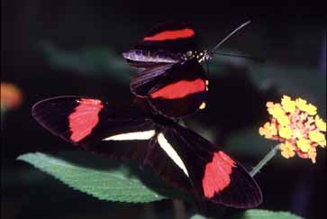
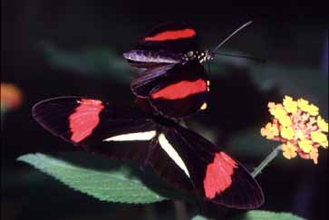

Hybridization,speciation and phylogeny in Heliconius butterflies
Many species of
Heliconius hybridize occasionally in nature. We have been studying
hybridization between recently evolved species of tropical Heliconius
butterflies. Heliconius are among of the best examples of mimicry
(see also photos at top of home page),
and were indeed among the first examples studied by Bates.
Although hybridization is usually rare on a per individual basis, over
a quarter of all Heliconius species produce hybrids with at least one
other species in nature.
 

Heliconius breeding
in the insectary. First photo: Female Heliconius cydno from
Panama mating with a male cydno x melpomene hybrid.
Second photo: Two forms of Heliconius melpomene used in our experiments;
top -- French Guiana; bottom -- Panama.
We concentrated on hybridization between the
species H. cydno and H. melpomene in both laboratory and field
studies (see photos above). This work has been carried out by Chris
Jiggins, Russ Naisbit, Vanessa Bull and I, together with Colombian colleagues
from the Universidad de los Andes under Dr. Mauricio Linares, and was supported
by NERC. A switch in Müllerian mimicry ring and associated microhabitat
choice was important in triggering speciation between these species: mimicry
causes speciation. In collaboration with Biff Bermingham (STRI, Panama)
and W. Owen McMillan (Puerto Rico), we are involved in genomic mapping of the
genetic differences between these two species. For details of the work so far,
you may want to look at the PhD thesis of Vanessa
Bull and the research pages of Chris
Jiggins and Owen McMillan.
Over the years, we have been accumulating
data on the colour pattern genetics in a variety of crosses between geographic
races and species of Heliconius erato, H. melpomene, and related
species. These broods are
now being collated as photographs
and specimens in database format for use in studies of developmental genetic
evolution of colour pattern, as Heliconius enters the genomic age.
Due to the large amounts of molecular
work on Heliconius and related species, we are now in a position to contribute
towards a molecular phylogeny of the
Heliconiina based on both mitochondrial and multiple nuclear loci. The
work is being carried out at STRI by Margarita Beltrán
as part of her PhD work, in collaboration with Andrew Brower (Oregon) and Carla
Penz (Milwaukee).
Further details: NERC grant
report abstract
Genealogy
and Speciation in Heliconius butterflies,
by Vanessa Bull (2003)
Artificial crosses of Heliconius
Data
on Heliconius hybrid crosses
Other
Heliconius links
Return
to Research Themes
Return
to J. Mallet home page